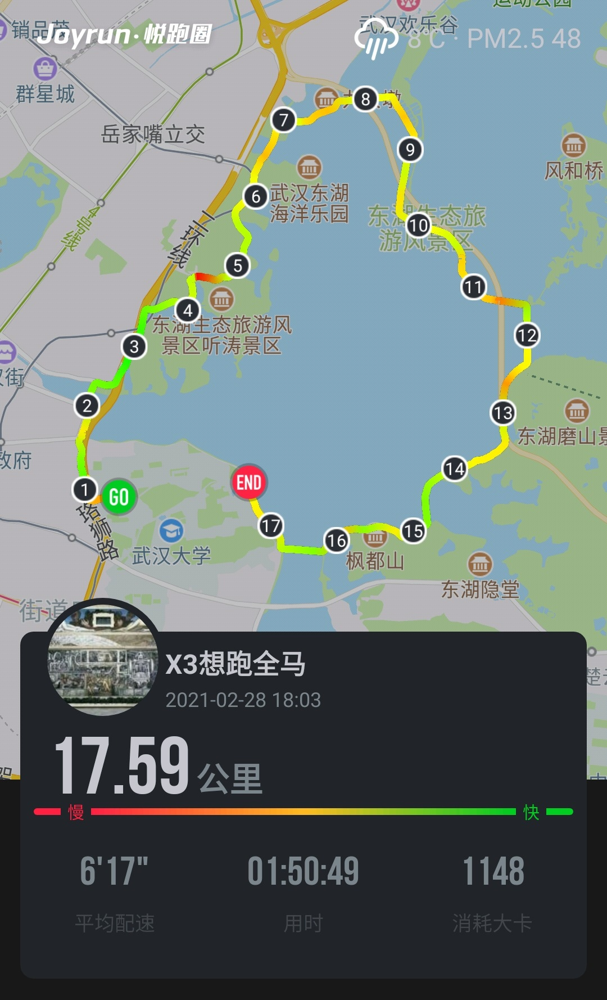

FLAG2021-1-马拉松gogogo
来到2021，立下今年的第一个FLAG，年内持续训练，跑下一场42.193公里的马拉松。（要是能抽中今年汉马就好了）
持续更新ing
2021-02-21开练前状态：
- 63.5KG
- 平均半个月跑次步，5km，配速5'45
跑步日常
Day 2 体能的恢复还是要循序渐进的。连续两日的5km慢跑训练，已经让大腿隐隐酸痛。 这回准备马拉松，可是该更认真，科学的研究跑步了。
Day 3
尽管在外浪了一日，九点半还是换上短裤夜跑。前些日子大腿攒下的酸痛仍未褪去，只得勉强磨蹭着慢跑，约莫630的配速熬过了5km。 跑时庆幸明天总算迎来休息日，但打字的此时此刻，总觉得明天还是该撒丫子奔跑一回才是。
Day 7
跑者up主陆续进驻关注列表。正在学习前掌跑法。 话说，新手总是忍不住买装备[Lol]，下单了puma的ultraride，作为休息日的短距离慢跑鞋。
返校当日，例行来了圈环湖跑。

杂谈几点：
跑鞋
此前买的Reebok Floatride RS ULTK偏大，但一直将就着。这回细细体验，深感自己以前跑时的容忍度之高——内长过长，跑时脚在鞋中“前不着村后不着店”。无后跟港宝提供的锁定感，脚趾又无法被鞋头包裹，跑时就像海盗船在风浪中闯荡😂。也正因鞋码不合适，只得用后掌滚动跑法，一点点磨蹭前行。
雨跑
第一回雨跑，日常的打底裤、短裤、上衣三件套外随手抄起件戴帽的拉链卫衣就出门了。好在有帽子护着，中雨里行进不至于被浇个透心凉。却是雨势渐小后，浑身衣物吸饱水分，将卫衣围在腰间，沉甸甸的。至于鞋袜，早就泡透了，鞋款并不透气，袜子也非专业，只能强忍着湿润的脚感跑完全程。
途中遇到专业跑者，一身装备好不潇洒专业，激起了我研究之心哈。
雨跑装备总结：
- 空顶/全顶帽
- 速干袜
- 不冷的天——皮肤衣
- 寒冷且一定要跑的天——压缩臂套手套腿套来保温
最后留个跑步装备参考链接：
风景与心境
此前看张艺谋的《影》，觉得黑白墨色不过后期特效。真正置身水雾中时，惊觉水墨山水意境并不遥远。
天地茫茫，生机寥寥，除去不多的游人外，偶尔掠过的飞鸟或者水面啪嗒啪嗒的鸭子是不多的生气。